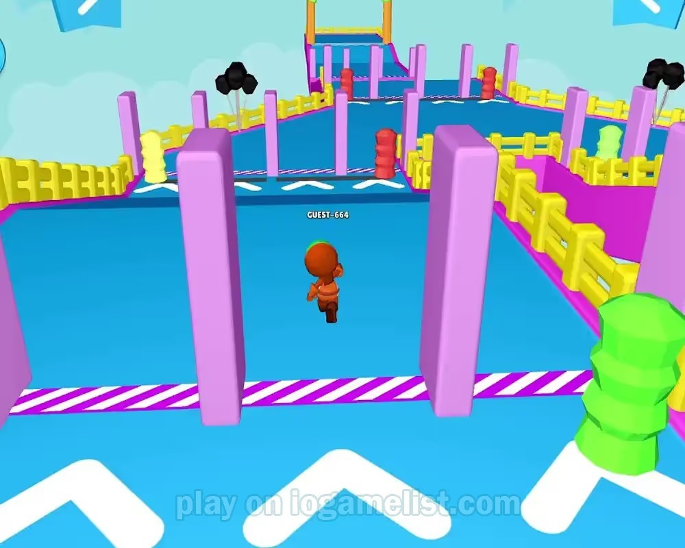
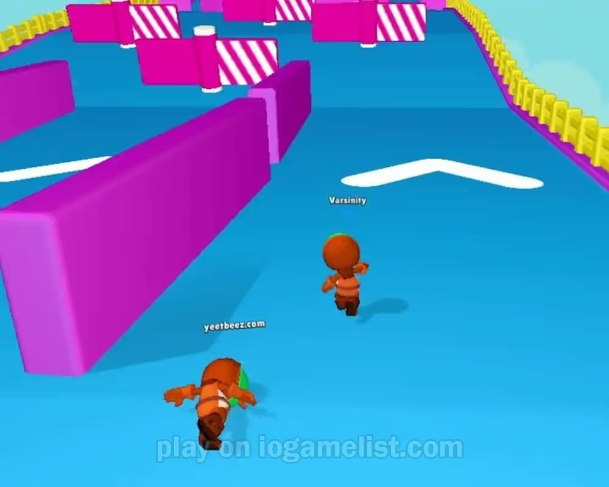

The Hard Truth About Your Astrodud.io Runs
You keep dying in the first thirty seconds. I see you. You spawn in, panic, and immediately faceplant into a pit trap or get launched off a floating platform by a swinging bat. I have over two thousand hours in Astrodud.io. I have survived every chaotic, physics-based nightmare this game throws at me. You think this is just a mindless running game. It is not. It is a brutal survival race where every mistake is punished instantly. If you want to actually reach the finish line instead of spectating from the void, you need to stop playing like a clueless rookie. Read every single word below. These are the fatal mistakes keeping you at the bottom of the leaderboard. Fix them, or keep dying.

| # | Mistake | Quick Fix |
|---|---|---|
| 1 | You Rush the Swinging Bats | Stop mashing your keys |
| 2 | You Bump Strangers at the Edge | Only bump players when you have a solid wall or obstacle behind you |
| 3 | You Ignore Temporary Alliances | Run alongside two or three players when approaching massive moving obstacles |
| 4 | You Spam Jump on Platforms | Stop holding the jump key |
| 5 | You Fall for the Chokepoint Trap | Slow down before you reach the chokepoint |
You Rush the Swinging Bats
You see a gap in the swinging bats and just sprint through it. You think your reflexes are fast enough to dodge the heavy wooden logs. You time your jump poorly and run straight into the center of the arc. You treat the swinging bats like a simple rhythm game instead of a lethal hazard. You ignore the pendulum's momentum and just mash your movement keys, hoping to clip past the wood without stopping. This reckless aggression guarantees you will eat a massive log to the face.
The physics engine in Astrodud.io is unforgiving. When a swinging bat connects with your tiny astronaut, it does not just push you back. It launches you. A direct hit sends your character flying off the course entirely. You lose all forward momentum and plummet into the pit traps below. Even a glancing blow messes up your trajectory, leaving you completely exposed to the next moving obstacle. You are essentially handing your elimination to the environment because you refused to wait three seconds.
Stop mashing your keys. Stand completely still before the bat sequence. Watch the pendulum complete at least two full swings to understand its exact timing and arc width. Wait for the bat to reach the absolute peak of its backward swing. Only then, take one precise step forward. Do not run. Walk through the gap with deliberate, single inputs. This guarantees you clear the hazard without triggering the physics launch. Patience here costs you two seconds but saves your entire run.
You Bump Strangers at the Edge
You see another player near the edge of a floating platform and immediately try to bump them off. You sprint directly at them, ignoring the narrow walkway. You think pushing opponents is the best way to secure your survival. You just spam the bump mechanic without checking your own footing. You treat every player interaction like a wrestling match, completely forgetting that you are standing on a precarious floating platform with deadly pit traps right below you.
Astrodud.io uses chaotic physics for player collisions. When you bump someone near the edge, the recoil affects you just as much as them. If you miss your push or they dodge, your own momentum carries you straight into the pit trap. You eliminate yourself while trying to eliminate them. The game rewards strategic sabotage, not blind aggression. By fighting in the open on narrow platforms, you give the rest of the lobby an easy target while you plummet to your death.
Only bump players when you have a solid wall or obstacle behind you. Never initiate a push on a narrow floating platform unless you are absolutely certain you will knock them into a hazard, not off the edge. If you want to sabotage someone, wait until they are navigating a moving obstacle. Time your bump to hit them exactly when the obstacle shifts. This uses the environment's momentum against them while keeping your own footing secure. Smart sabotage wins races.

You Ignore Temporary Alliances
You treat every single player as an immediate threat. You refuse to run alongside anyone. When a massive moving obstacle blocks the path, you try to navigate it completely alone. You think playing solo makes you faster and safer. You actively avoid the physical blocking that a group provides. You isolate yourself in the corners of the arena, believing that zero player interaction equals zero risk. You are playing a completely different game and ignoring the core survival mechanics.
The moving obstacles in this game are designed to sweep the entire width of the course. If you are alone, you have to time the gap perfectly. If you group up, you can form a physical wall. More importantly, you can use your allies to block the moving obstacle's path, creating a safe pocket for yourself. By refusing to form temporary alliances, you force yourself to take the hardest, most mathematically precise routes. You lose the numerical advantage that defines late-game survival.
Run alongside two or three players when approaching massive moving obstacles. Stick to their left or right side. Let them take the brunt of the physical blockage. If the obstacle pushes them, use the physical space they vacate to slip through safely. Communicate with simple bumps to herd your temporary allies into the danger zone while you take the clean path. Alliances are temporary, but the survival advantage they give you at a moving obstacle is permanent. Use them ruthlessly.
You Spam Jump on Platforms
You treat the floating platforms like a standard platformer. You hold down the jump key and spam it continuously. You think jumping higher and faster helps you cross the gaps quicker. You ignore the precise landing zones. You just leap blindly from one floating platform to the next, mashing your spacebar. You believe that aerial agility is your best friend, completely disregarding the fact that your character's hitbox is tiny and the platforms are even tinier.
The floating platforms require pixel-perfect precision, not aerial acrobatics. When you spam jump, you lose all control over your horizontal momentum. You overshoot the landing zone by a fraction of an inch. In Astrodud.io, touching the edge of a floating platform does not save you. If your hitbox misses the center by a single pixel, you slip right off into the pit traps below. Spamming jump turns a simple crossing into a chaotic gamble where the physics engine decides your fate.
Stop holding the jump key. Tap it once. Release it immediately. Time your single jump so you reach the absolute apex of your arc exactly when you are over the center of the next floating platform. Keep your movement keys completely neutral during the jump to prevent drifting. Land softly in the dead center of the platform. Do not move until you are completely stationary. One precise tap beats ten desperate leaps every single time. Control your momentum.
You Fall for the Chokepoint Trap
You see a narrow chokepoint forming ahead of you and you sprint directly into the center of the crowd. You think being in the middle of the pack keeps you safe from the edges. You push your way to the very front of the bottleneck. You ignore the fact that the course layout is dynamically changing and the walls are closing in. You just run blindly into the densest cluster of players, assuming the herd mentality will protect you.
Chokepoints in Astrodud.io are death traps. When the course narrows, the physics engine compresses dozens of players into a tiny space. If you are in the center, you have zero escape routes. When the moving obstacles hit the chokepoint, the crowd panics and surges. You get bumped from all sides simultaneously. You will inevitably be launched off the course by the collective physics collision of fifty panicking astronauts. The center of the chokepoint is exactly where the most eliminations happen.
Slow down before you reach the chokepoint. Hug the extreme outer edges of the course layout. Let the impatient players rush into the center and form a dense, chaotic wall. Wait for them to trigger the moving obstacles and get eliminated. Once the crowd thins out and the physics engine stabilizes, walk through the cleared path. You sacrifice three seconds of speed to guarantee you do not get crushed by the physics collision of a panicked crowd.
The Bottom Line
The biggest lie in Astrodud.io is that speed wins the race. It does not. Patience wins the race. The losers are the ones who panic, mash their keys, and let the chaotic physics engine dictate their movements. The winners observe the swinging bats, calculate the moving obstacles, and use the crowd as a meat shield. Stop treating this game like a mindless sprint. Treat it like a brutal survival puzzle. Master your momentum, respect the pit traps, and stop sabotaging your own runs. Now get back in the lobby and actually survive.